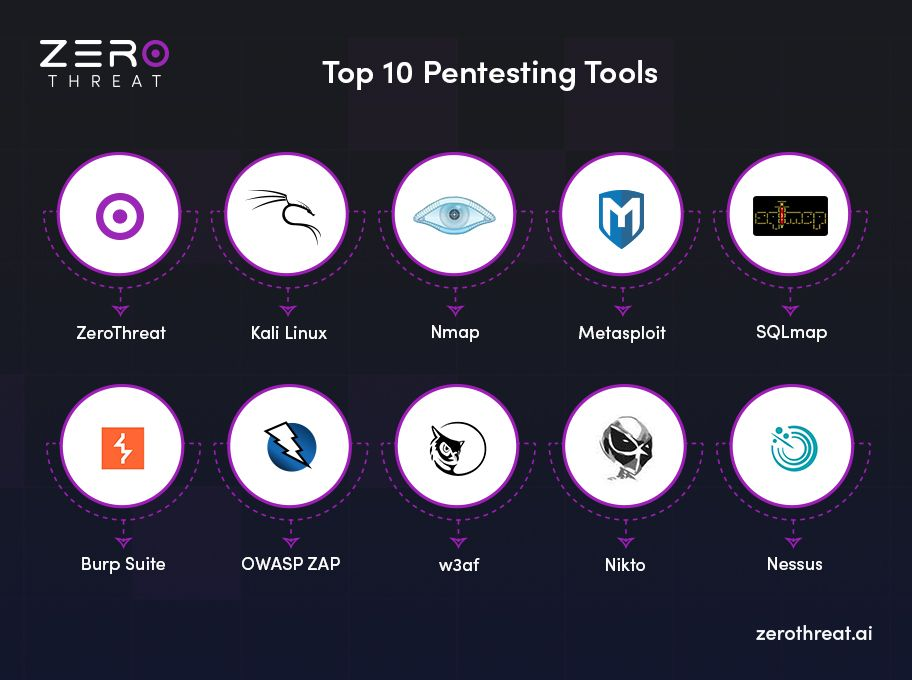
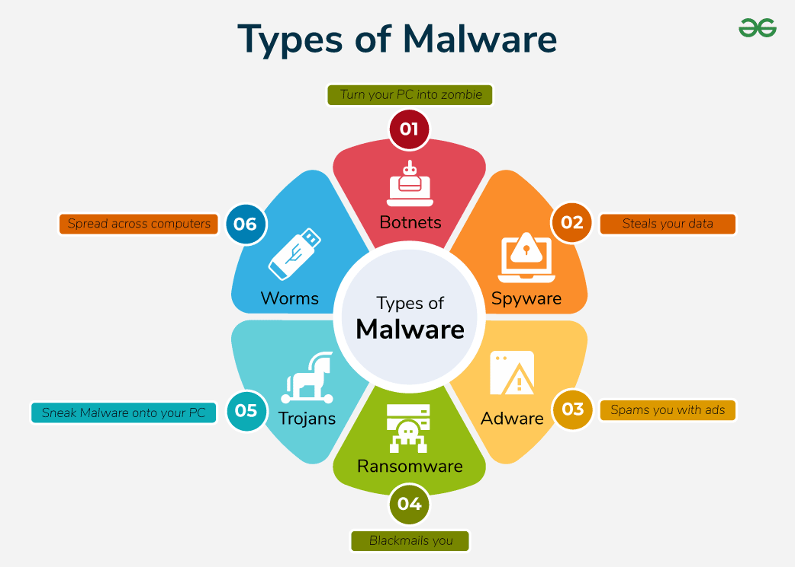
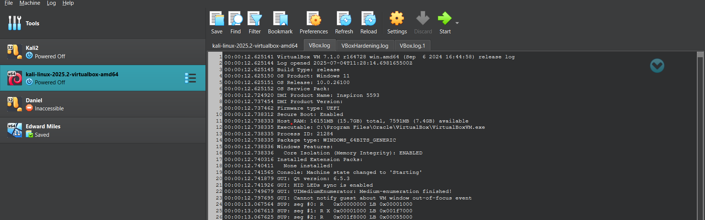

Projects
Malicious Browser Extension Detection (FYP)
- Designed a cross-layer detection system correlating browser telemetry with host-level system events
- Developed a simulated malicious extension performing data exfiltration and suspicious downloads
- Built a Python-based detection engine for real-time monitoring and behavioural analysis
- Implemented event correlation logic to attribute malicious activity to specific extension IDs
- Introduced risk scoring and filtering mechanisms to improve detection accuracy

Digital Forensics – Operation Redbridge
- Recovered deleted files from NTFS file systems using forensic tools
- Analysed disk images and extracted hidden artefacts
- Decrypted VeraCrypt volumes to uncover concealed evidence
- Investigated browser history, images, and audio files
- Maintained evidence integrity using MD5 hashing techniques

Advanced Forensics – Operation Wapping
- Performed steganography analysis to extract hidden data
- Decoded QR-based passwords and encrypted content
- Investigated attacker behaviour through digital artefacts
- Worked with encrypted containers and secure file formats

Penetration Testing & Enumeration Lab
- Conducted network scanning using Nmap for host discovery
- Identified vulnerabilities and mapped CVEs
- Applied MITRE ATT&CK techniques for attack simulation
- Performed Linux privilege escalation exploitation

Cybersecurity Practical Logbook
- Analysed WannaCry and Conficker malware behaviour
- Simulated DoS attacks and studied impact on systems
- Configured firewalls and tested network defences
- Conducted phishing simulations and web security testing

Home Lab Environment
- Built virtualised lab using Windows and Linux machines
- Practised exploitation and vulnerability assessment
- Monitored logs using Splunk for threat detection
- Simulated real-world attack and defence scenarios